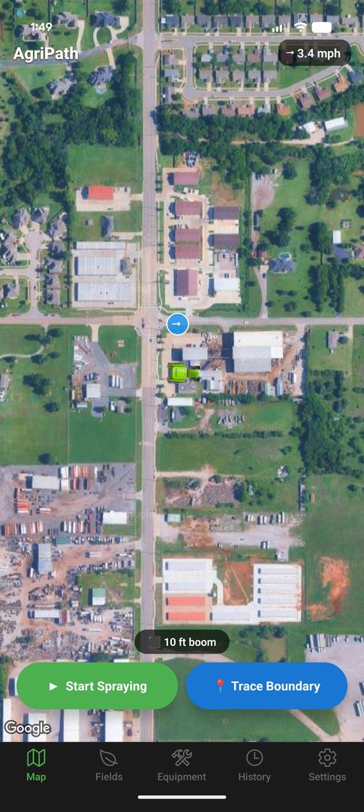

Android · Currently in beta
The spray monitor you already own.
It’s in your pocket.
AgriPath records your swath in real time, shades the overlap, counts the acres, and watches the wind, on the phone you already carry, even when there’s no signal for miles.
Free during beta. Android today. iOS planned.

The situation
A factory-installed guidance monitor runs three to ten thousand dollars.
John Deere GreenStar, Trimble GFX, Raven Viper: all impressive boxes, and all priced for the cab of a new tractor. If you’re running an older rig, a side-by-side, or an ATV-mounted sprayer, the math gets worse: the monitor often costs more than the sprayer.
The strange part is that your phone has the same GPS chip as a $1,200 receiver. The gap was never the hardware. It was the software, and the assumption that software like that needed a $50,000 vehicle wrapped around it.
AgriPath is the software, with no vehicle required.
How it works
Four steps from phone to spray record.
-
1
Set your boom width
Create an equipment profile with the actual width in feet (10′ for an ATV spot sprayer, 60′ for a pull-behind, whatever you run). Hot-swap profiles between jobs.
-
2
Trace your field once
Drive the perimeter once with boundary mode on. The app captures points every few meters and closes the loop into a saved GeoJSON polygon. Name it “North 40” and it’s yours forever.
-
3
Start spraying
Press start. A swath polygon paints behind your position at the configured width. Overlap zones darken to 100% opacity so you can see double-applied passes at a glance. Acres tick up live.
-
4
Finish and export
One tap stops the session and saves it tagged with product, rate, water volume, and field. Export as GeoJSON or KML to email, Drive, Google Earth, or a regulator’s file folder.
What’s in it
The specific things, named specifically.
Tracking
- Live swath polygon
- Rendered at your configured boom width, second-by-second, as you drive.
- Overlap shading
- 50% opacity fill stacks where passes cross. Double-sprayed ground becomes obvious.
- Background GPS
- Keeps recording with the screen off or the app minimized. Drop the phone in a cupholder.
- Headland-friendly
- Top-down tractor icon rotates with your heading so end-row turns read naturally.
Fields
- Continuous boundary tracing
- Drive the edge once. No pin-dropping. Capture interval is tuned for vehicle speeds.
- Saved field library
- Each field tracks session count and total sprayed acres over time.
- Auto-tag detection
- Start a session inside a saved boundary and the field is pre-selected. The name shows on the map.
Wind & weather
- Always-on wind badge
- Current speed and compass-rotated arrow, top of screen. Tap for a 6-hour forecast.
- Drift threshold alerts
- Set your maximum (e.g. 10 mph). Get a push notification when it’s exceeded, even in the background.
- Source: Open-Meteo
- Free, no API key, backed by NOAA GFS data for U.S. forecasts. No account, no rate limits in normal use.
Records & export
- Session tagging
- Each session captures product, application rate, water volume, and the field, editable after the fact.
- History & filtering
- Search by product, filter by field or by 7/30/90-day windows.
- GeoJSON and KML
- Open in QGIS, ArcGIS, Google Earth, or hand to anyone who’s asked you to prove what you sprayed where.
An honest comparison
AgriPath next to a factory monitor.
We’re not going to pretend a phone replaces a wired-in lightbar with auto-section control. Here’s where AgriPath wins and where it doesn’t.
(GreenStar, Trimble, Raven)
Rows in gray are where a wired-in monitor still has a real advantage. If you need auto-section shutoff on a 90-foot boom, buy the box. If you’re hand-spraying ditches off a four-wheeler and writing acres on a clipboard afterward, AgriPath is the upgrade.
Questions we actually get
FAQ.
Does it work without cell service?
Yes. GPS doesn’t need cell signal, it’s satellites. Tracking, swath rendering, acreage, field boundaries, and session save all work fully offline. The two things that need internet are the initial wind forecast (cached when last fetched) and downloading new map tiles. Cache your map tiles over Wi-Fi before you head out and you’re set.
How accurate is phone GPS compared to a real monitor?
A modern Android phone’s GPS is typically accurate to within 3–5 meters under open sky, and most newer phones support multi-constellation receivers (GPS, GLONASS, Galileo). That’s close to non-RTK monitor accuracy. It is not centimeter-level RTK. If you’re running auto-steer on 30-inch rows, a phone is not your tool. For ground-rig herbicide application with a wide boom, it’s plenty.
Where does my spray data go?
Onto your phone. That’s it. AgriPath stores everything in local SQLite and AsyncStorage on the device. There’s no account, no server, no telemetry. When you export a session you pick where it goes: email, Drive, a USB transfer. We don’t see it.
What about iPhone?
Android first. iOS is planned but not committed to a date. The honest reason: Android lets us distribute beta APKs directly to operators without a $99/year developer fee and a review queue, which has let us iterate fast with farmers. iPhone support will come once the core is stable.
How much does it cost?
Free during the beta. Long-term pricing isn’t finalized; the goal is one-time purchase or a low flat annual fee, with no per-acre, no per-vehicle, no subscription that holds your past records hostage. Whatever it is, it will be a long way south of three thousand dollars.
Will it drain my battery?
Background GPS is the biggest battery draw on any phone. Plan on a 12V charger in the cab, same as you’d use for navigation on a long highway drive. Screen-off tracking is significantly easier on the battery than screen-on, and AgriPath supports both.
Can I export records for regulatory or chemical-rep reporting?
Yes. Every session can be re-exported at any time as GeoJSON or KML, complete with the product, rate, water volume, field name, date, and acreage. Hand it to a regulator, drop it into your farm management software, or open it in Google Earth and screenshot it. A PDF spray-record export is on the roadmap.
Currently testing with a small group of operators.
If you’d like an APK and a place to send feedback, drop us a line.
hello@agripath.app